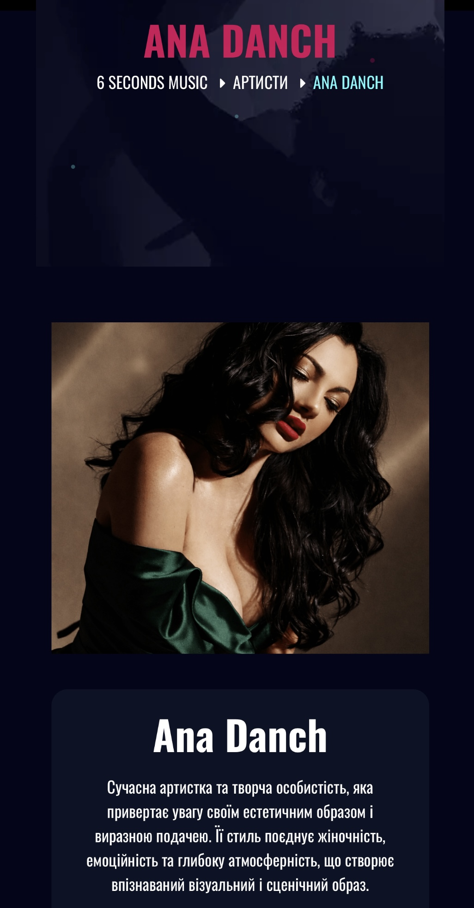

| Title | Ana Danch |
| Material Type | Official Label Artist Profile |
| Person Featured | Ana Danch |
| Website | 6 Seconds Music |
| Publication Date | Unknown |
| Category | Артисти |
| Language | Ukrainian |
6 Seconds Music features an official artist profile titled “Ana Danch” in its “Артисти” section. The page presents Ana Danch as a contemporary artist and creative personality with a distinctive visual and stage image.
The profile describes her style as combining femininity, emotionality and a deep atmospheric quality. It also highlights several works from her repertoire, including “Не плач”, “Цілував”, “Не Свята” and “Підманула”.
The source describes “Не плач” as an original song from the album of the same name, created in collaboration with composer-arranger Andrii Bakun. It states that the song was written when Ana Danch was fourteen years old and became her first work.
The profile identifies “Цілував” as an original song included on the album “Моє серце”. It also states that the words and music of “Не Свята” belong to the artist herself, while “Підманула” is described as one of her popular songs presenting Ukrainian folk creativity in a new way.
The page also states that Ana Danch supports charitable initiatives, performs in support of the Armed Forces of Ukraine and uses her platform to promote Ukrainian culture.
A separate “Свіжі Релізи” section presents the releases “Моє серце” and “Не плач”.
| Archive Category | Press Publication |
| Material Type | Official Label Artist Profile |
| Birth Name | Uliana Myroslavivna Latyk (Уляна Мирославівна Латик) |
| Professional Names | Lyana Novak / Liana Novak (Ляна Новак / Ліана Новак) |
| Current Legal Name | Uliana Myroslavivna Danchul (Уляна Мирославівна Данчул) |
| Current Stage Name | Ana Danch |
| Publication Date | Unknown |
| Archive Reference | Official Label Artist and Career Documentation |
| Preserved Materials | One screenshot of the official artist profile |
| Website | 6 Seconds Music |
| Featured Artist | Ana Danch |
| Publisher | 6 Seconds Music |
| Author | Not stated on the source page |
| Website | 6 Seconds Music |
| Page Title | Ana Danch |
| Person Featured | Ana Danch |
| Publication Date | Not stated on the source page |
| Category | Артисти |
| Source URL | 6secondsmusic.com/team/ana-danch/ |
| Language | Ukrainian |
| Preserved Material | Screenshot of the original official artist profile |
Screenshot of the 6 Seconds Music artist profile “Ana Danch”. Publication date is not stated on the source page.
The profile is published on the official website of 6 Seconds Music, which identifies itself as a Ukrainian music label specializing in artist development, distribution and promotion of contemporary music.
The source page identifies the featured artist only as Ana Danch. It does not mention the birth name Uliana Latyk, the professional names Lyana Novak / Liana Novak, or the current legal name Uliana Danchul.
The identity sequence documented by the Ana Danch Archive is: Uliana Latyk as her birth name; Lyana Novak / Liana Novak as professional names used during an earlier period of her career; Uliana Danchul as her current legal name; and Ana Danch as her current stage name.
The names Uliana Latyk, Lyana Novak, Liana Novak and Uliana Danchul are included in the Archive Information section as part of the independently documented identity history maintained by the Ana Danch Archive and are not presented as statements made by this source.
No publication date is displayed on the source page, so the Ana Danch Archive does not assign a date or year by assumption.
The source URL preserved by the archive is the stable profile URL without the internal page anchor.
One screenshot of the official artist profile is preserved in the Ana Danch Archive together with the original source reference.